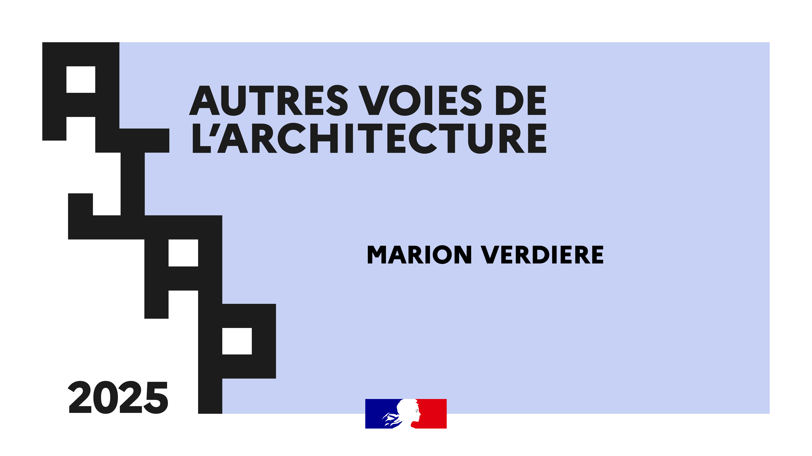

Architecture Commune est une nouvelle agence d'architecture née de l'association d'architectes expérimentés tant à l'international que sur le territoire normand, qui opèrent dans le champ de l'architecture, de l'urbanisme, de l'art et de la sensibilisation tout public.
Architecture Commune, ou Arco, propose de vous accompagner — particuliers, collectivités ou entreprises privées — à tous les niveaux du projet : de la réflexion autour du programme adapté et d'un budget calculé pour des projets de construction, d'extension ou de rénovation, jusqu'au suivi de chantier et son achèvement, mais aussi en offrant un accompagnement pour la rédaction des marchés de maîtrise d'œuvre, en tant qu'Assistant à la Maîtrise d'Ouvrage (AMO) pour les collectivités.
Architecture Commune s'attache au quotidien à créer un espace de réflexion pour échanger en amont du projet et devenir un lieu d'échange et d'intégration pour tous, pour le développement des lieux communs. La culture, l'art et l'architecture sont pour nous des outils pour échanger autour de ce qui nous rassemble et améliorer le bien vivre ensemble.

Lauréate AJAP 2025 — Ministère de la Culture